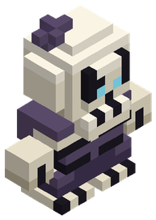

No-muerto
Esqueleto que se niega a descansar; lleva lo que queda de su ropa.
100Vida
5,2Daño (×1,05)
10Armadura
2,1Regeneración (×0,7)
×1Velocidad
Rasgo: Vigor nocturno (+15 %), Breathhold (+100 %)
Versión femenina: cada raza tiene cuerpo y cabeza femeninos en el creador de personajes, con los mismos colores.

Aspecto
Opciones del creador de personajes.
| Huesos | Hueso Viejo Gris Negro |
|---|---|
| Túnica | Morada Negra Granate Verde oscuro |
| Ojos | Azules Verdes Rojos Violetas |
Ramas de habilidades
Caballero de la Muerte
Tanque drenador
- Resistencia
vida +1 % (por rango, máx. 30) - Coraza
armadura +2 % (por rango, máx. 30) - Recuperación
regeneración +2 % (por rango, máx. 30)
20 puntos en la rama · requiere «Resistencia» - Firmeza
resistencia a caídas +1 %, armadura +1 % (por rango, máx. 30)
50 puntos en la rama - Aguante
vida +0,5 %, armadura +1 % (por rango, máx. 30)
100 puntos en la rama - Aura profana Definitiva
vida +10 %, armadura +10 % (rango único)
50 puntos en la rama · requiere «Recuperación» - Drenaje de sangre Definitiva
vida +15 %, armadura +15 % (rango único)
100 puntos en la rama · requiere «Aura profana» - Coraza de costillas Definitiva
vida +20 %, armadura +20 %, regeneración +20 % (rango único)
150 puntos en la rama · requiere «Drenaje de sangre»
Segador de Almas
Asesino espectral
- Filo
daño cuerpo a cuerpo +1 % (por rango, máx. 30) - Pies ligeros
velocidad +0,5 % (por rango, máx. 30) - Reflejos
velocidad de ataque +1 % (por rango, máx. 30)
20 puntos en la rama · requiere «Filo» - Acrobacia
salto +1 % (por rango, máx. 30)
50 puntos en la rama - Golpe mortal
daño cuerpo a cuerpo +1 % (por rango, máx. 30)
100 puntos en la rama - Atravesar muros Definitiva
daño cuerpo a cuerpo +10 %, velocidad +5 % (rango único)
50 puntos en la rama · requiere «Reflejos» - Guadaña Definitiva
daño +10 %, velocidad de ataque +5 % (rango único)
100 puntos en la rama · requiere «Atravesar muros» - Teletransporte Definitiva
daño cuerpo a cuerpo +20 %, velocidad +5 % (rango único)
150 puntos en la rama · requiere «Guadaña»
Lich Nigromante
Mago de cripta
- Poder arcano
daño de hechizos +1 % (por rango, máx. 30) - Meditación
regeneración +2 % (por rango, máx. 30) - Canalización rápida
velocidad de ataque +1 % (por rango, máx. 30)
20 puntos en la rama · requiere «Poder arcano» - Temple
vida +0,5 % (por rango, máx. 30)
50 puntos en la rama - Maestría arcana
daño de hechizos +1 % (por rango, máx. 30)
100 puntos en la rama - Rayo de necrosis Definitiva
daño de hechizos +10 % (rango único)
50 puntos en la rama · requiere «Canalización rápida» - Legión esquelética Definitiva
daño de hechizos +10 %, regeneración +20 % (rango único)
100 puntos en la rama · requiere «Rayo de necrosis» - Detonar cadáveres Definitiva
daño de hechizos +20 %, velocidad de ataque +10 % (rango único)
150 puntos en la rama · requiere «Legión esquelética»
Las definitivas dan por ahora un bono fijo; su habilidad activa llegará más adelante.
Archivos: mods/races/undead.json y mods/skills/undead.json